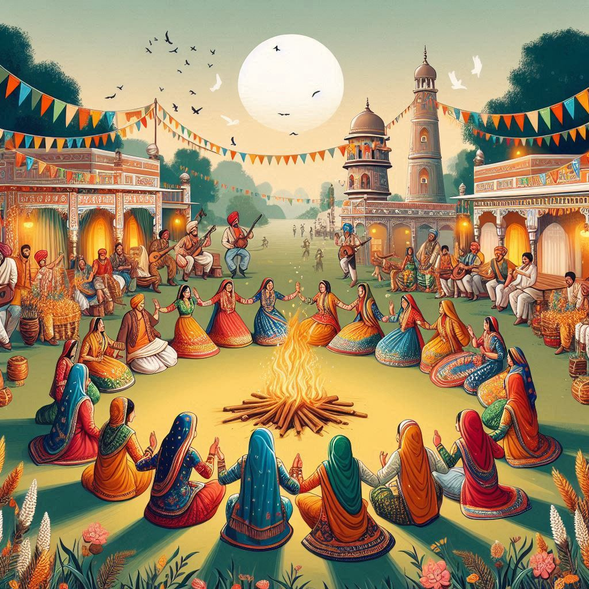

Haryana, a state in northern India, boasts a rich and vibrant culture shaped by its history, traditions, rural roots, and modern influences. The cultural landscape of Haryana is deeply rooted in agricultural practices, folk music, dance, and festivals. Here’s an overview of the culture of Haryana:
1. Festivals
- Baisakhi: Celebrated in April, marking the harvest season, associated with traditional dances like Gidda and Bhangra.
- Teej: Celebrated mainly by women, this festival marks the monsoon season with vibrant clothes, songs, and dances.
- Diwali: Like much of India, Diwali is celebrated with lamps, crackers, and sweets.
- Makar Sankranti: Known for kite flying and feasting on sesame and jaggery sweets.
2. Music and Dance
- Haryanvi Folk Music: Includes Dholki, Ragini, and Kaili, often depicting rural life and social themes.
- Dance Forms: Bhangra, Gidda, and Dhamal are common during weddings and festivals.
- Ragini: A storytelling folk music form, often in dialogue format, popular in rural Haryana.
3. Dress
- Men: Typically wear kurta-pajama or dhoti with a safaa (turban).
- Women: Wear salwar kameez, dupattas, and sometimes ghagra choli with intricate jewelry.
- Footwear: Men often wear mojris, while women prefer juttis.
4. Cuisine
- Roti: The staple food, often served with dals and sabzis.
- Kadhi Pakora: A yogurt-based curry with gram flour fritters.
- Dahi (yogurt) and lassi (a yogurt drink).
- Pinni: A famous sweet made from wheat flour, ghee, and jaggery.

5. Art and Craft
- Phulkari Embroidery: Known for floral designs used in shawls, dupattas, and quilts.
- Wood Craft: Channapatna toys and other wooden artifacts.
- Pottery: Traditional clay pots for storing water and cooking.
- Jute Work: Bags, carpets, and mats made from jute.
6. Language
The primary language is Haryanvi, a Hindi dialect. Hindi and English are more common in urban centers, with pockets of Punjabi speakers.
7. Traditional Sports
- Kushti: Wrestling is highly popular, with numerous successful wrestlers from Haryana.
- Kabaddi: Widely played, especially in rural areas.
- Kho-Kho: Popular in schools and villages.
8. Social Customs and Practices
Haryanvi weddings are grand, community-driven events, often involving customs like Jaimala (garland exchange) and Baraat (groom’s procession). Village life is centered around festivals, fairs, and community gatherings.
9. Religion
Predominantly Hindu, with smaller communities of Sikhs, Muslims, and Christians. Major festivals like Holi, Diwali, Raksha Bandhan, and Eid are widely celebrated.
Conclusion
Haryana’s culture blends tradition and modernity, deeply rooted in its rural values, while embracing modern influences through music, dance, cuisine, festivals, and daily customs.